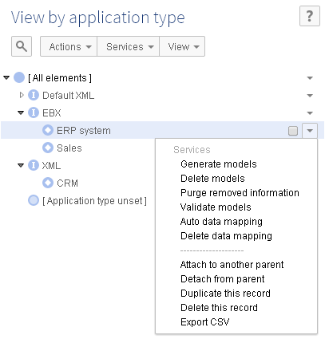

In order to manage user-defined data mapping configurations, a portfolio of services is available depending on the application type. These services are located on the 'Application by type' table in the 'Data exchange' data space under the EXB5 'Administration' tab.

The creation of user-defined data mapping configurations requires IT skills. Based on these configurations, end-users can export, import and transfer the data easily, all the technical aspects of data mapping configuration are hidden from them.
The table below gives a short description of the services available to manage the user-defined data mapping configurations.
Services applied to an Application of type -> | Default XML | XML | EBX5 |
|---|---|---|---|
Delete data mapping | Physical deletion of all Tables, Fields and related data mapping (Tables: Version, Interface Application, Table mapping, Field mapping, Field mapping transformation and Path ) for the Application. For an EBX5 type application, the Object class, Property and related tables (Object Class by Application, Property by Object Class) are also removed. | ||
Generate models | N/A | Tables and Fields are declared as XML Tags. The generation is based on a sample XML file that must be provided as input data. | Tables and Fields are declared as an EBX5 path. Object classes and Properties can also be generated to get the semantic data model. The generation is based on a data space - data set corresponding to the Application. |
Delete models | N/A | N/A | Logical deletion of Object class and Property type items-if not used by another application. Logical deletion of all application Tables and Fields. The logical deletion is registered by using the property 'Is removed' |
Purge removed information | N/A | N/A | Physical deletion of the items that are tagged 'Is removed' = 'Yes' by the 'Delete models' service. All data mappings that refer to the deleted items are also physically removed. |
Validate models | N/A | N/A | Checks if the configuration is still updated with the EBX5' data model. All unaligned Tables and Fields are then modified by changing the 'Is removed' property into the value 'Yes' |
Auto data mapping | N/A | N/A | Automatically configures the data mapping between two EBX5 applications sharing the same Object class and property items. |